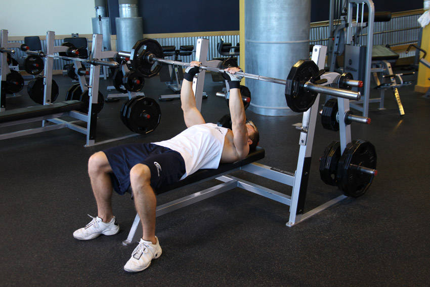

- Lie back on a flat bench. Using a close grip (around shoulder width), lift the bar from the rack and hold it straight over you with your arms locked. This will be your starting position.
- As you breathe in, come down slowly until you feel the bar on your middle chest. Tip: Make sure that - as opposed to a regular bench press - you keep the elbows close to the torso at all times in order to maximize triceps involvement.
- After a second pause, bring the bar back to the starting position as you breathe out and push the bar using your triceps muscles. Lock your arms in the contracted position, hold for a second and then start coming down slowly again. Tip: It should take at least twice as long to go down than to come up.
- Repeat the movement for the prescribed amount of repetitions.
- When you are done, place the bar back in the rack.
This exercise appears in Programmd training programs. Take the quiz to find one for your gym.
Find my program